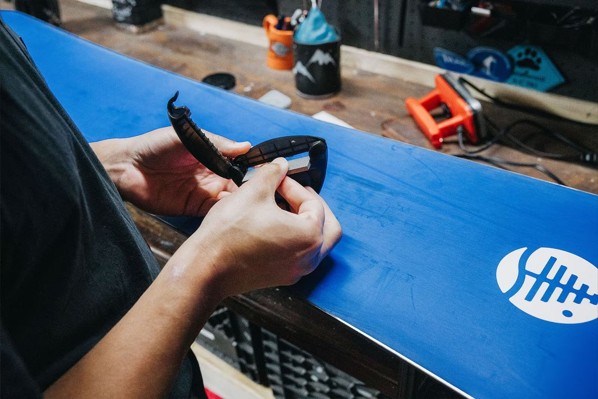

🥉
Brons
Wax & verzorging
Ski€ 19,95
Snowboard€ 24,95
- Warme waxbeurt
- Afkoelen en afschrapen
- Uitborstelen en finish
Ideaal als tussentijdse verzorgingsbeurt.
Gericht onderhoud, zorgvuldig uitgevoerd. We behandelen wat nodig is en slijpen niet zomaar materiaal weg omdat het kan.
Machinaal vlakslijpen kan soms nodig zijn, maar iedere slijpbeurt verwijdert ook een dun laagje van het belag. Daarom maken we van vlakslijpen geen automatische standaardstap.
We bekijken eerst de staat van je ski of snowboard. Daarna kiezen we de behandeling die bij het materiaal past. Waar mogelijk werken we handmatig aan kanten, structuur, wax en finish.
Het doel is niet alleen dat je materiaal vandaag goed rijdt, maar dat je er meerdere winters plezier van houdt.


Kies het pakket dat past bij de staat van je materiaal. Twijfel je? We beoordelen het eerst en adviseren wat echt nodig is.
Wax & verzorging
Ideaal als tussentijdse verzorgingsbeurt.
Grip & glijvermogen
Voor meer grip én soepel glijden.
Complete onderhoudsbeurt
Compleet klaar voor de wintersport.
Compleet + lichte reparaties
Voor lichte krassen en kleine lokale beschadigingen.
De pakketten zijn onze hoofdroute, maar losse werkzaamheden zijn ook mogelijk.
Geen vaktermen zonder uitleg. Dit is wat er met je ski of snowboard gebeurt en waarom je het op de piste merkt.
De wax wordt verwarmd en over het belag verdeeld. Na afkoelen schrapen we de overtollige wax weg en borstelen we het oppervlak zorgvuldig uit. De wax verzorgt het belag en helpt de wrijving met de sneeuw te verminderen.
De stalen kanten worden door gebruik bot en kunnen bramen krijgen. Door ze gericht te slijpen en tunen krijg je weer meer grip en controle, vooral op harde of ijzige pistes.
Fijne groeven in het belag helpen vocht onder de ski of het snowboard af te voeren. Waar passend frissen we die structuur handmatig op, zonder automatisch een laag belag weg te slijpen.
Tijdens het glijden ontstaat door druk en wrijving een microscopisch dun waterfilmpje tussen sneeuw en belag. Bij koude, droge sneeuw is er juist veel droge wrijving; bij warmere sneeuw kan vocht extra remmen.
Een goed gewaxte basis vermindert die weerstand. De structuur helpt vocht af te voeren. Samen zorgen wax en structuur ervoor dat je materiaal soepeler glijdt.


Een snelle pisteservice is handig wanneer je dezelfde dag weer de berg op wilt. Zulke behandelingen zijn vaak vooral gericht op direct resultaat.
Lattenspecialist richt zich op een zorgvuldige voorbereiding vóór je wintersport: controle, kanten, verzorging van het belag, warme wax en een nette finish.
Een goede basis thuis. Extra glijplezier op de berg.
Kleine verpakking voor een snelle extra glijboost tijdens je wintersport. Een aanvulling op de werkplaatsbehandeling, geen vervanging ervan.
Oppervlakkige krassen en kleine lokale beschadigingen kunnen we tijdens het onderhoud herstellen. Bij diepere of constructieve schade beoordelen we eerst wat verstandig is.
Extra werkzaamheden worden nooit zonder overleg uitgevoerd.


Geen tijd om twee keer op en neer te rijden? Binnen ons servicegebied in regio Maas & Waal halen we je ski’s of snowboard gratis op en brengen we ze na het onderhoud weer terug.
Buiten ons standaard servicegebied? Neem contact op. Vaak is er in overleg iets mogelijk.
Vraag naar de mogelijkhedenTwijfel je, dan beoordelen we het materiaal eerst. We adviseren het pakket dat past bij de staat van je ski of snowboard en voeren geen extra werkzaamheden uit zonder overleg.
Vlakslijpen verwijdert materiaal. Soms is dat nodig, maar we willen het niet automatisch bij iedere beurt doen. Waar mogelijk kiezen we voor gerichter, minder ingrijpend onderhoud.
Dat hangt af van sneeuwsoort, temperatuur, aantal skidagen, je rijstijl en het type belag. Daarom beloven we geen vast aantal dagen. Een warme waxbeurt is vooral bedoeld als goede verzorgde basis voor je wintersport.
Bij voorkeur wel. Zijn ze nog gemonteerd, dan kunnen we ze voor €7,50 demonteren en weer monteren.
Nog niet. We doen lichte, oppervlakkige belagreparaties. Diepe kernschade, zware schade aan de staalkant en constructieve reparaties nemen we voorlopig niet aan.
Als richtlijn hanteren we circa 3–5 werkdagen. In drukke periodes kan dit oplopen. Bij het aanmelden laten we weten wat op dat moment haalbaar is.
Stuur ons een bericht. Vertel om hoeveel ski’s of snowboards het gaat en welk pakket je in gedachten hebt. Twijfel je? Dan kijken we samen wat passend is.